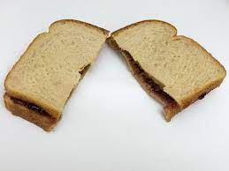

PB & J

Description
A classic US lunch option, virtually unknown (and sometimes derided!)
in other countries, the PB&J is an simple and easy filling meal.
Ingredients
- Peanut Butter
- Jelly
- Bread (in pairs of slices)
Steps
- Spread peanut butter over one slice of bread
- Spread jelly over the other slice of bread
- Place peanut butter side on jelly side
- Optional: Cut into wedges, halves, or remove crusts